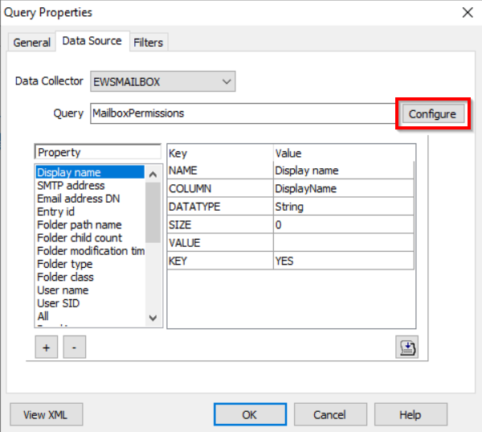
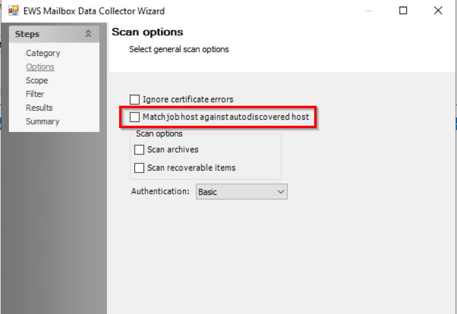

Symptom
When running a job that uses EWSMailbox Data Collector, the following error appears:
The Autodiscover service couldn't be located
Cause
This error populates due to missing or incorrect Autodiscover settings in the job XML.
Resolution
To resolve this error, follow the steps below:
-
Open the Query Properties for the EWSMailbox task.
-
Select View XML.
-
Insert the following code that best matches your environment within the <EWS_PROPERTIES></EWS_PROPERTIES> tags. This is located near the bottom of the XML:
NOTE: The XML will automatically reformat itself upon saving.
-
SCP Disable Variable
<HTTP_HEADERS/> <SERVICE_PROPERTIES/> <AUTODISCOVER_PROPERTIES> <EnableScpLookup>False</EnableScpLookup> </AUTODISCOVER_PROPERTIES> -
Office Online Only
<HTTP_HEADERS/> <SERVICE_PROPERTIES> <Url>https://outlook.office365.com/EWS/Exchange.asmx</Url> </SERVICE_PROPERTIES> <AUTODISCOVER_PROPERTIES> <Url>https://autodiscover-s.outlook.com/autodiscover/autodiscover.svc</Url> </AUTODISCOVER_PROPERTIES> -
Hybrid Environment (On-Prem & Online)
<HTTP_HEADERS/> <SERVICE_PROPERTIES> <Url>https://outlook.office365.com/EWS/Exchange.asmx</Url> </SERVICE_PROPERTIES> <AUTODISCOVER_PROPERTIES> <EnableScpLookup>False</EnableScpLookup> <Url>https://autodiscover-s.outlook.com/autodiscover/autodiscover.svc</Url> </AUTODISCOVER_PROPERTIES>
-
SCP Disable Variable
-
On the Query Properties window, select Configure.
 -
On the Scan options window, uncheck the option for Match job host against autodiscovered host.
 -
Proceed through the wizard by selecting Next and complete the process by clicking Finish to close out the EWSMailbox DC Wizard.
-
Select OK to close the Query Properties window.